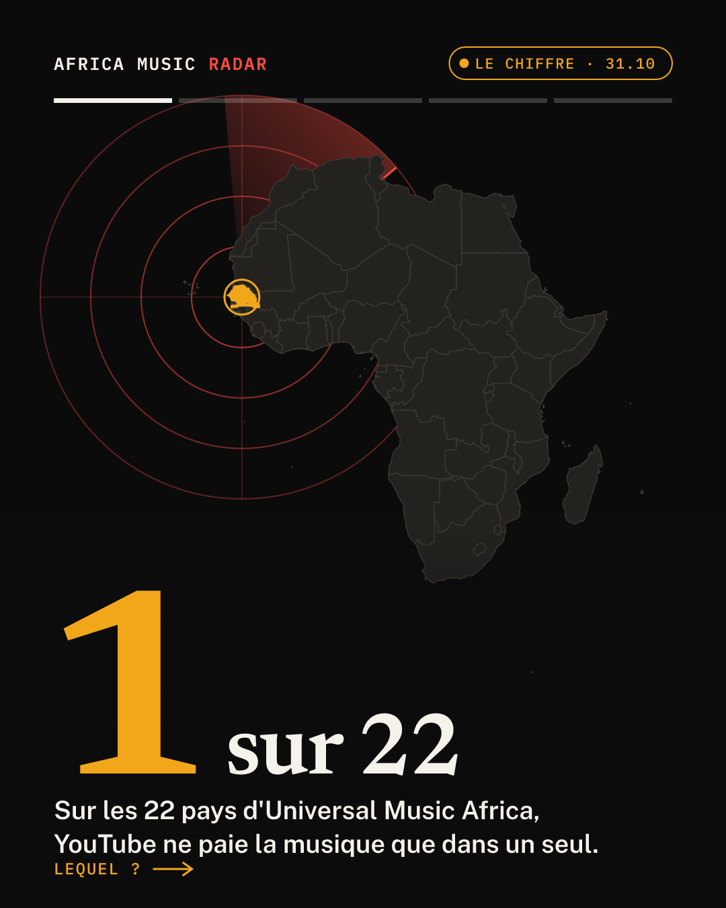
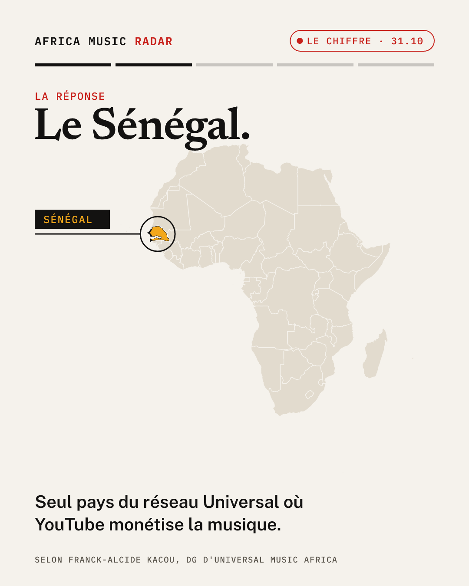
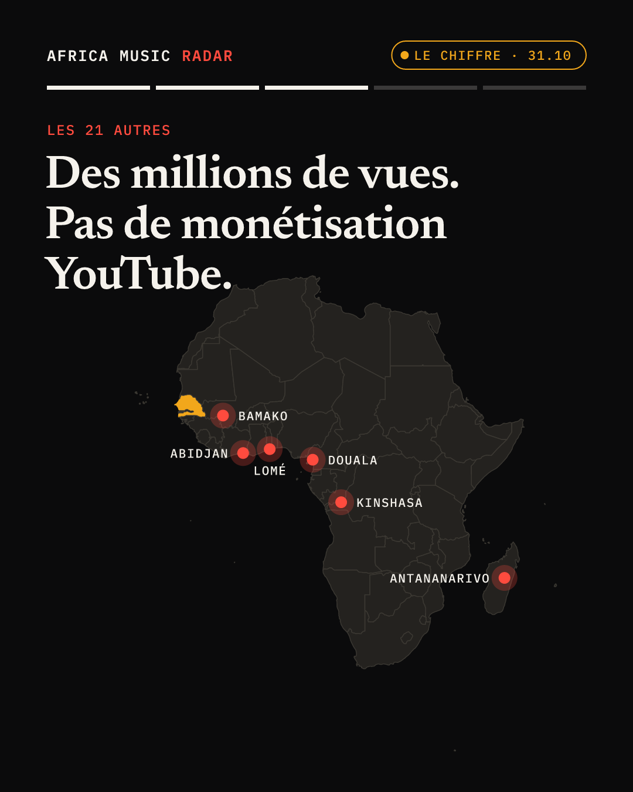
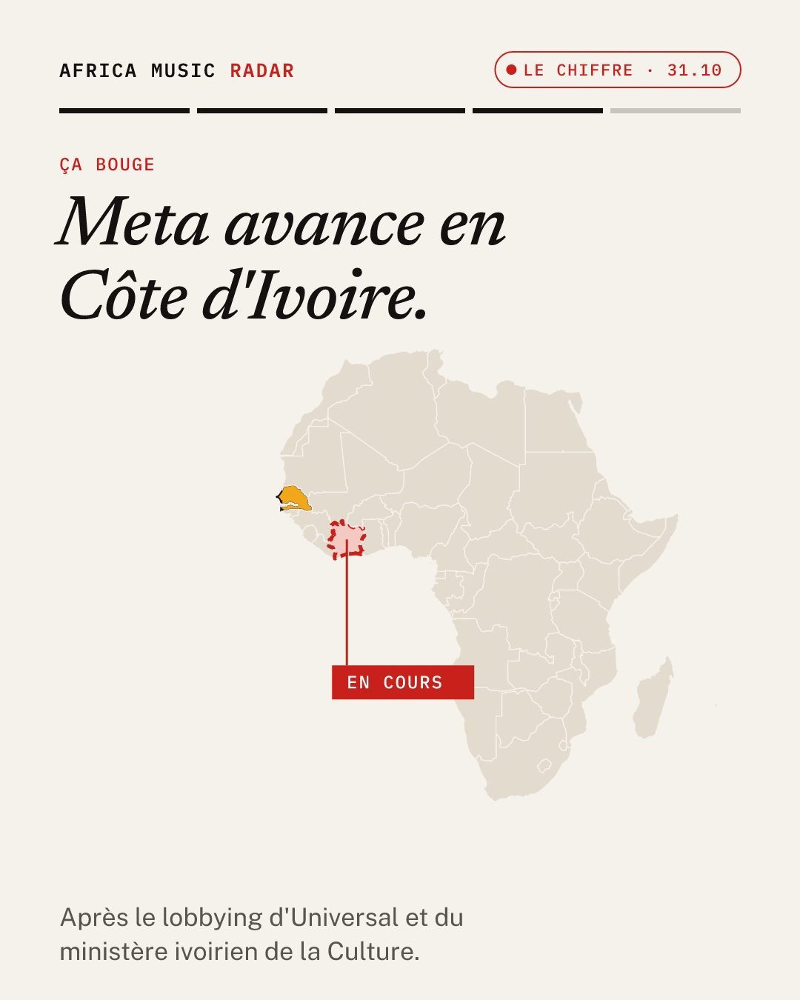
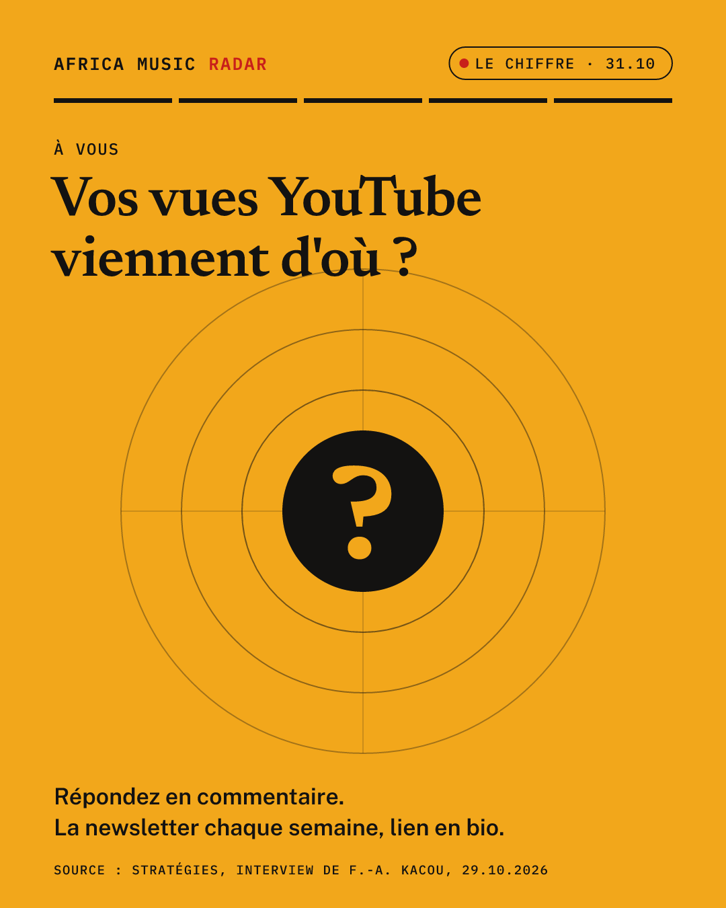

1 pays sur 22. Universal Music Africa couvre 22 pays, du Sénégal à Madagascar. Sur ce périmètre, YouTube ne monétise pour l'instant la musique que dans un seul : le Sénégal. C'est ce qu'explique son DG, Franck-Alcide Kacou, dans une interview à Stratégies. Dans les 21 autres, un clip peut faire des millions de vues sans générer de revenus publicitaires musicaux sur YouTube. Le bon signal : une avancée est en cours avec Meta en Côte d'Ivoire, après un lobbying d'Universal et du ministère de la Culture. Artistes, managers : vos vues viennent d'où ? Dites-le en commentaire 👇 #AfricaMusicRadar #MusiqueAfricaine #IndustrieMusicale #YouTube #Streaming #Sénégal #CôteDIvoire #MusicBusiness
1 country out of 22. Universal Music Africa covers 22 countries, from Senegal to Madagascar. Across that footprint, YouTube currently monetises music in only one: Senegal. Its MD, Franck-Alcide Kacou, said so in an interview with Stratégies. In the other 21, a video can rack up millions of views without generating music ad revenue on YouTube. The good news: progress is under way with Meta in Côte d'Ivoire, after lobbying by Universal and the Ministry of Culture. Artists, managers: where do your views come from? Tell us below 👇 #AfricaMusicRadar #AfricanMusic #MusicIndustry #YouTube #Streaming #Senegal #IvoryCoast #MusicBusiness